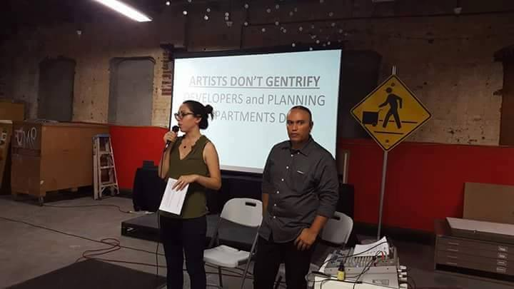
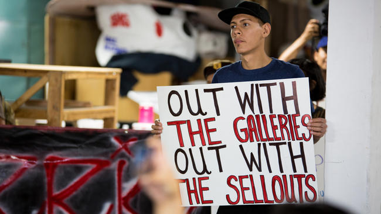

Self-Help Graphics (SHG) has the unique position of being located in an area of Boyle Heights where many gentrifying businesses have begun to relocate in recent years. Given the proximity to the LA River and the Arts District, gentrifiers and real estate agents have an interest in and around the area of where Self-Help Graphics stands today. While SHG has produced so much for the community and supported many great artists, their recent action (and inaction) on gentrification in Boyle Heights is what prompts them to appear on this map.

SHG has identified its role in the anti-gentrification movement by pressuring large, corporate entities like the University of Southern California (USC) and participating in public outreach processes with Metro on development on publicly owned land. The issue, however, is that SHG has failed to speak out against the gentrifying art galleries, upscale businesses, and increased police presence and surveillance in their corner of Boyle Heights. That is, speak out against the luxury art galleries that are their neighbors and speak out against the real estate speculation occurring in their vicinity. It is not enough for SHG, a well-resourced institution, to stay silent when so much economic violence is happening around them.

In July 2016, Self-Help Graphics held a forum for community members concerned with gentrification. Against a PowerPoint backdrop with the heading “ARTISTS DON’T GENTRIFY, PLANNERS AND DEVELOPERS DO,” SHG leadership, including current Executive Director Betty Avila, attempted to downplay the role that artists played in real estate speculation. Neighbors, activists, public housing residents, and members of Defend Boyle Heights called out SHG’s leadership for the reluctance to recognize how artistic production and the entities that fund and circulate it could be exploited by those with real estate interests, indirectly affecting the stability of a community. The irony is that SHG continues to accept resources, money, and property from those planners and developers that gentrify Boyle Heights.
To date, SHG’s Council of Governors still includes those with deep real
estate affiliations. Alfred Fraijo Jr., who owns various rental properties in Boyle Heights and represents
luxury developers in other gentrifying areas of LA, remains on their council despite community groups calling Fraijo out for his business
ties and opportunism. SHG has also accepted funding from Vera Campbell, a
fabric company owner who has purchased multiple properties in Boyle Heights and displaced the autonomous
community center La Conxa on 1st Street. SHG leadership, like Avila, should recognize that their
silence on speaking out against evictions, real estate speculation, and artwashing demonstrates a complicit role
in destabilizing this working-class neighborhood.